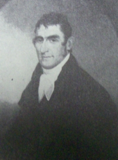

Spencer Stafford
 According to traditional sources, Spencer Stafford was born in Rhode Island in April 1772. He was the youngest son of Joab and Susanna Spencer Stafford. He grew up in the large family of mobile New Englanders who finally settled in western Massachusetts within a few years of his birth. Within a decade, their children would establish themselves in what soon would become the capital city of the Empire State.
At age fifteen, he was apprenticed to his brother-in-law, Thomas Spencer, and went to work at Spencer's store on what became Market Street in Albany.
In September 1790, he was not yet nineteen when he married Albany native Dorothea Hallenbeck, the daughter of a middling but landed mainline Albany family.
This Stafford family first made its home on Hallenbeck family land along what became South Pearl Street. Later, he built an elegant home at what is now 100 Madison Avenue.
In 1792, he removed to Deerfield in Oneida County to make potash and engage in business. Tradition holds that the Staffords lived in a log house with oiled paper windows and pine torches for light. A year later, he had returned to the Southside of Albany where he lived for the rest of his life.
Spencer Stafford was a businessman. Also known as a silversmith, in 1794 the Albany Register advertized that he had for sale "tin plate, sheet iron, copper, and brass." Over the years, he had a number of business partners including his older brother John, tinsmith James Minzie, and also his sons and son-in-law. He was a member of the Albany Mechanics Society.
In 1800, his first ward household included eight members. Two years later, he purchased a property on South Market Street from Thomas Gould. He demolished the existing building and, by 1815, had erected a four-story brick store on the property at what is now 420 Broadway. With and succeeded by his sons and son-in-law (Lewis Benedict), he operated a stove-casting business in a block called "Hardware Row" for many years.
After giving birth to five children, Dorothea Hallenbeck Stafford died following a brief illness in July 1806. At age thirty-five, Spencer married Harriet Romeyn of New Jersey in 1807. He soon moved them to the new home on Lydius Street where they raised four more children. He is said to have been an Episcopalian. His mother's family were mostly Quakers.
Spencer Stafford is said to have retired in 1825 leaving his sons in charge of his holdings. Over the previous three decades he had been elected assessor and then alderman and was a director of a number of civic organizations.
The family historian described the most memorable member of the Albany branch of the Stafford family:
"Mr. Stafford was essentially a practical business man. Self-reliant, industrious, enterprising, he possessed in a great measure the qualities essential to mercantile success, and his energy enabled him to secure for his family the comforts which their social position demanded. To those who invoked his aid he gave not only sound advice, but also a helping hand. He was a man of more than average mental endowments, and of considerable culture; fond of scientific works, a constant reader of the English classics as well as the journals and debates of the day. Politically an ardent democrat, he was a great admirer of Andrew Jackson and his policy. In manners polite and courteous, his house was for years the seat of generous hospitality, and during the ascendancy of the republican party, early in the century, it was the frequent resort of such political leaders as Judge Ambrose Spencer, Sol. Southwick, the Barbers, Benj. Knower, Martin Van Buren, Citizen Genet and Gov. Clinton."
Spencer Stafford died in February 1844 at the age of seventy-two. He was interrred in the Hallenbeck burial ground on South Pearl Street. Later, his remains were removed to the Albany Rural Cemetery.
Very poor copy of a photograph of a portrait of Stafford said to have been painted by his South Pearl Street neighbor Ezra Ames in 1805. Copied from Ezra Ames of Albany, p. 45. A somewhat different likeness appears in the standard family history.
Copied from "The Stafford Family," as printed in Collections, volume 3, p. 449.
Staff members at the Albany County Archives have compiled useful material on Spencer's city property as part of a manual on researching building histories. Relevant excerpts from that publication from 1986 are included here for accessibility reasons. "Spencer Stafford's store at 420 Broadway is located on the west side of that street between Beaver and State Streets. It has been assessed in Albany's fourth ward (1819-1834, 1841-1869), sixth ward (1870-1964) and third ward (1835-1840, 1965-1986). The lot has been addressed as #387 Market Street (1819-1831), #359 Market Street (1832-1839), #9 South Market Street (1840-1845) and #420 Broadway (1846-1986).